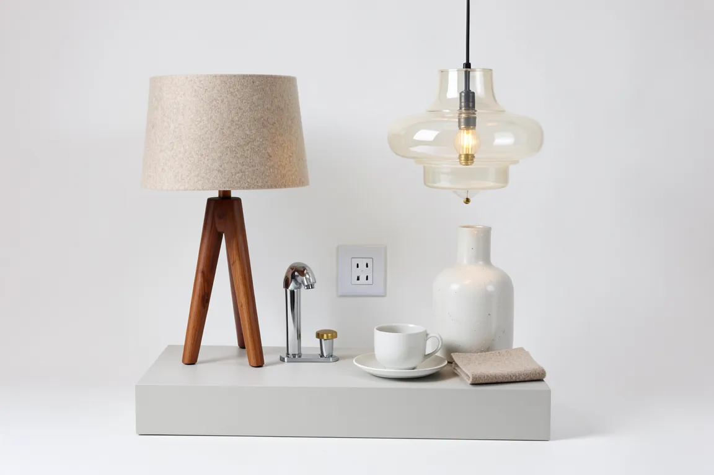

industrial · 1930–1975 · also: Danish modern, Nordic functionalism, Swedish Grace to Scandinavian modern
Everyday objects of bent birch, teak, oak and wool from the Nordic workshops: low, soft in outline and made for use. Craft joints are kept, and makers sell to ordinary homes.

Core thesis
A good object is a plain tool for a person: it is made of local wood and wool, shaped to the hand and the body, and built to last for decades.
Design principles
Use solid wood or bent plywood in its own colour: birch, beech, oak, ash or teak, with an oiled or soaped surface.
Round each edge that a hand or an arm touches to a radius of 4 to 15 mm.
Cut each joint by hand or machine to a fine fit, and show it where it carries load.
Shape each seat and arm to the body, with a curve in at least one plane.
Keep ornament to one detail: a grain pattern, a woven seat or a brass part.
Use wool, linen or leather in undyed or muted colours for the soft parts.
Make glass lamp shades in 2 or 3 layers so that no bulb is in direct view.
Draw each object for series production in a small workshop, and offer it at a price that a family can pay.